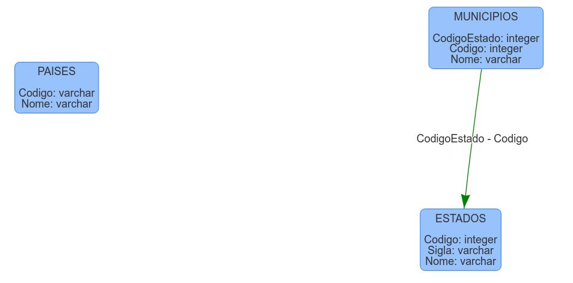
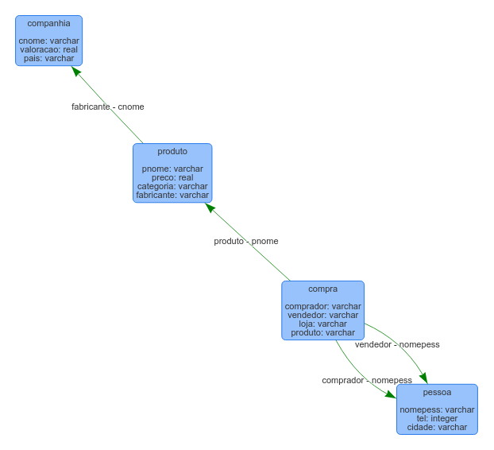
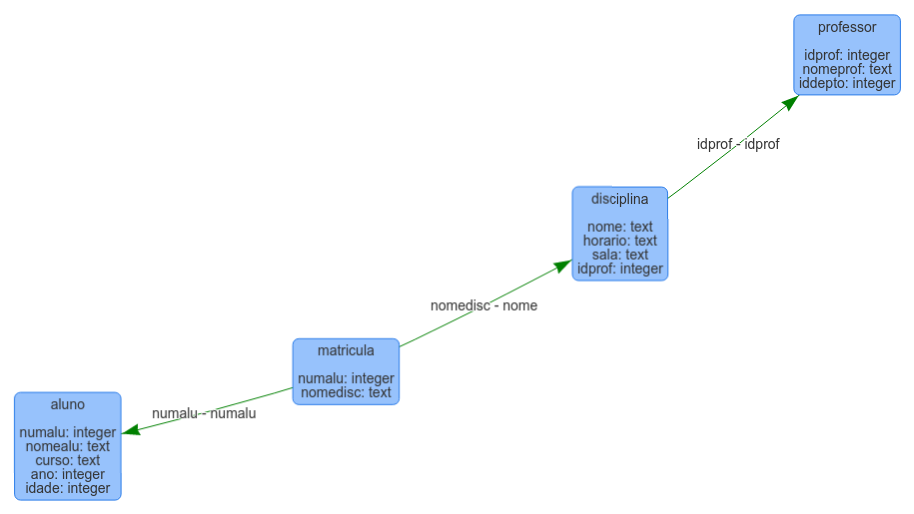
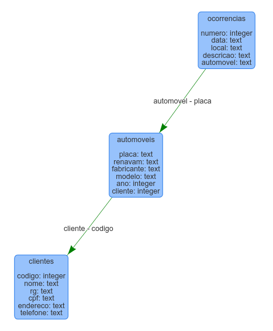
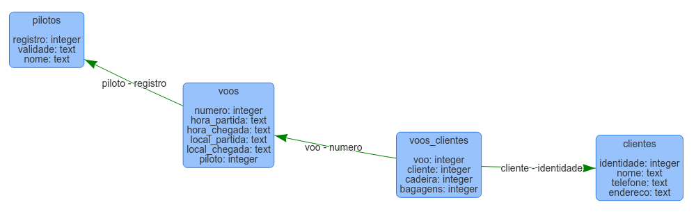
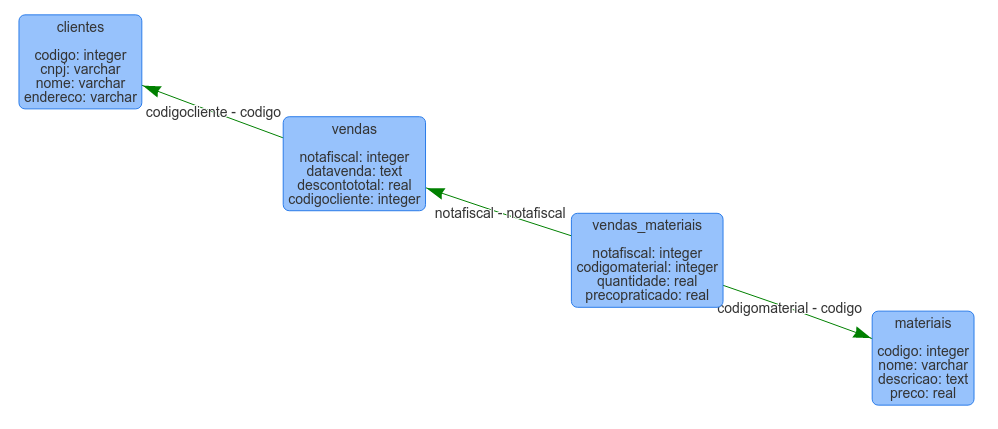
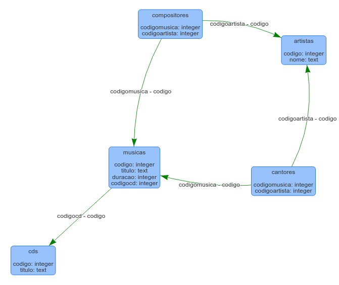

Curso de Programação C#
William Ivanski
Lista de Exercícios Módulo III Capítulo 2 (Respostas)
1) Baixe o banco de dados lugares.db e o descreva na forma algébrica. Em seguida, desenhe o seu DER.
Forma algébrica:
- PAISES (Codigo, Nome)
- ESTADOS (Codigo, Sigla, Nome)
- MUNICIPIOS (CodigoEstado, Sigla, Nome)
DER:

2) Baixe o arquivo compras.xlsx. Desenhe o DER, descreva na forma algébrica e crie o banco de dados em SQLite usando o OmniDB.
Baixar banco de dados. Forma algébrica:
- companhia (cnome, valoracao, pais)
- pessoa (nomepess, tel, cidade)
- produto (pnome, preco, categoria, fabricante)
- compra (comprador, vendedor, loja, produto)
DER:

3) Baixe o arquivo escola.xlsx. Desenhe o DER, descreva na forma algébrica e crie o banco de dados em SQLite usando o OmniDB.
Baixar banco de dados. Forma algébrica:
- aluno (numalu, nomealu, curso, ano, idade)
- professor (idprof, nomeprof, iddepto)
- disciplina (nome, horario, sala, idprof)
- matricula (numalu, nomedisc)
DER:

4) Baixe o banco de dados northwind.db e o descreva na forma algébrica. Em seguida, desenhe o seu DER.
5) Construa um DER e crie em SQLite o banco de dados para uma companhia de seguros de automóveis com um conjunto de clientes, onde cada um possui um certo número de automóveis. Os dados do cliente são código, nome, RG, CPF, endereço e telefone. Do carro deve-se armazenar a placa, código RENAVAN, fabricante, modelo e ano. Associado a cada automóvel há um histórico de ocorrências. Cada ocorrência deve ter um número (único), data, local e descrição.
Baixar banco de dados. DER:

6) Construa um DER e crie em SQLite o banco de dados de uma clínica, conforme abaixo:
- cada médico que trabalha na clínica é identificado pelo seu CRM, nome, data de admissão e salário;
- para todo paciente internado na clínica são cadastrados alguns dados pessoais: código, nome, RG, CPF, endereço e telefone para contato;
- um paciente tem sempre um médico responsável, com um horário de visita diário predeterminado;
- pacientes estão sempre internados em quartos individuais que são identificados por um número e está em um andar na clínica.
7) Você foi convidado a elaborar um banco de dados para uma empresa de consultoria que deseja registrar informações sobre seus projetos e consultores. De acordo com o solicitado pelo seu cliente, para cada projeto você deverá armazenar o código, nome e endereço da empresa que solicitou o projeto, o número do projeto, a data de início e término do projeto, o valor do projeto, o número, nome, número do documento de identidade e especialização dos consultores que participaram do projeto, as horas que trabalharam em cada projeto e a função que exerceu (líder ou membro). Note que uma mesma empresa pode solicitar diversos projetos e um mesmo consultor pode trabalhar em diversos projetos. Elabore o DER deste banco de dados e crie-o em SQLite utilizando o OmniDB. Elabore o nome dos campos de maneira a deixar claro que informação está sendo armazenada no mesmo.
8) Você foi convidado a elaborar um banco de dados para uma pequena companhia aérea que deseja registrar informações sobre seus vôos e clientes. De acordo com o solicitado pelo seu cliente, para cada vôo você deverá armazenar o nome, o número do registro e a data de validade do registro do piloto que realizou o vôo, o número do vôo, a hora de partida e de chegada do vôo, o local de partida e de destino do vôo, o nome, número do documento de identidade, número do documento de identidade, telefone e endereço dos clientes que estavam presentes, o número da cadeira em que estavam sentados e a quantidade de bagagens que cada cliente despachou. Note que um mesmo piloto pode fazer diferentes vôos e um mesmo cliente pode voar diversas vezes. Elabore o DER deste banco de dados e crie-o em SQLite utilizando o OmniDB. Elabore o nome dos campos de maneira a deixar claro que informação está sendo armazenada no mesmo.
Baixar banco de dados. DER:

9) Você foi convidado a elaborar um banco de dados para uma loja de material de escritório que deseja registrar informações sobre vendas de materiais. De acordo com o solicitado pela loja, para cada venda você deverá armazenar o código, CNPJ, nome e endereço do cliente para o qual fez a venda, o número da nota fiscal, a data da venda, o valor do desconto concedido, o endereço de entrega e o código, nome, descrição e preço de tabela dos materiais que foram vendidos, as quantidades vendidas com os preços praticados para cada tipo de material. Note que para um mesmo cliente a loja pode realizar várias vendas, e um mesmo tipo de material pode ser vendido várias vezes. Elabore o DER deste banco de dados e crie-o em SQLite utilizando o OmniDB. Elabore o nome dos campos de maneira a deixar claro que informação está sendo armazenada no mesmo.
Baixar banco de dados. DER:

10) Desenhe o DER e crie em SQLite um banco de dados para atender à seguinte situação:
Baixar banco de dados. DER:

- Quero criar um banco de dados para organizar os meus CDs;
- Um CD possui um título e diversas músicas;
- Toda música possui um título e uma duração;
- Uma música pode ter sido composta por um ou mais compositores;
- Uma música pode ter sido interpretada por um ou mais cantores;
- Existem cantores que também são compositores (e vice-versa).
11) Desenhe o DER e crie em SQLite um banco de dados para atender à seguinte situação:
- A ACME é uma indústria localizada em uma pequena cidade do interior;
- Na ACME todo funcionário está lotado em um departamento. Cada departamento faz parte de uma diretoria. Uma diretoria controla diversos departamentos;
- No cadastro do funcionários estão cadastrados todos os seus dependentes. Como a cidade é pequena, alguns dependentes de funcionários também são funcionários, e a ACME precisa registrar esses casos.
12) Desenhe o DER e crie em SQLite um banco de dados para atender à seguinte situação:
- Uma construtora desenvolve projetos de grande porte;
- Esta empresa está organizada em departamentos, sendo que cada projeto é sempre coordenado por um departamento;
- Os departamentos possuem empregados que podem ser chefes. Embora um empregado pertença sempre a um departamento, ele pode ser alocado a projetos de outros departamentos.
13) Construa um DER e crie em SQLite o banco de dados para uma empresa contendo tipo de produto, fornecedor, cliente, venda e loja. Suponha que:
- um tipo de produto pode ser fornecido por vários fornecedores e um fornecedor pode fornecer vários tipos de produto;
- a venda a um cliente pode conter vários tipos de produto e um tipo de produto pode fazer parte de várias vendas;
- a venda a um cliente é realizada em uma das lojas da empresa;
- cada produto numa venda tem preço e quantidade;
- cada venda tem número da nota fiscal, data e valor total;
- cada tipo de produto tem código, nome e descrição;
- cada cliente tem código, nome e endereço;
- cada fornecedor tem código, nome, CNPJ e endereço;
- cada loja tem código, nome e CNPJ.
14) Desenhe o DER e crie o banco de dados em SQLite utilizando OmniDB de um modelo de votação eleitoral. Indique as chaves primárias, chaves estrangeiras e cardinalidades entre as entidades. Segue abaixo o modelo na forma algébrica:
- Politicos (codigoPolitico, nome, partido)
- País (codigoPais, nome, codigoPresidente, codigoVicePresidente)
- Senadores (codigoSenador)
- DeputadosFederais (codigoDepFederal)
- Estados (codigoEstado, codigoPais, nome, UF, codigoGovernador, codigoViceGovernador)
- DeputadosEstaduais (codigoDepEstadual)
- Cidades (codigoCidade, codigoEstado, nome, codigoPrefeito, codigoVicePrefeito)
- Vereadores (codigoVereador)
- ZonasEleitorais (codigoZona, codigoCidade)
- Eleitores (codigoEleitor, codigoZona)
15) Desenhe um DER e crie o banco de dados em SQLite que represente as informações sobre uma gravadora e seus músicos descrita abaixo:
- Cada músico tem um identificador, CPF, nome, endereço e telefone.
- Cada instrumento usado na gravadora tem um código identificador, um nome (guitarra, sintetizador), um tipo (sopro, corda, percussão) e uma data de compra.
- Cada álbum gravado tem um título, data dos direitos autorais, um formado (CD, MP3) e um identificador de álbum.
- Cada música gravada tem um título e diversos autores.
- Cada músico pode tocar diversos instrumentos musicais, e cada instrumento pode ser tocado por diversos músicos.
- Cada álbum tem um conjunto de músicas, mas nenhuma música pode aparecer em mais de um álbum.
- Cada música é tocada por um ou mais músicos e cada músico pode tocar em diversas músicas.
- Cada álgum tem exatamente um músico que é seu produtor. Um músico pode produzir diversos álbuns.
16) Construa um DER e crie o banco de dados em SQLite que modele a rede de farmácias descrita abaixo:
- a empresa mantém um registro de clientes contendo RG, nome, endereço e idade;
- os médicos cadastrados são identificados pelo RG. Para cada médico, são mantidos o nome, especialidade e anos de experiência;
- cada laboratório farmacêutico é identificado pelo nome e tem um telefone;
- para cada remédio, são mantidos o nome comercial e a fórmula. Cada remédio é produzido por um determinado laboratório farmacêutico, e o nome comercial identifica o remédio. Se um laboratório é removido do cadastro, não há necessidade de manter o cadastro dos seus produtos;
- cada farmácia da rede tem um nome, endereço e telefone;
- cada cliente tem um médico cadastrado que é seu responsável; cada médico tem pelo menos um paciente;
- cada farmácia da rede vende diversos remédios e tem um preço para cada um; um remédio pode ser vendido em diversas farmácias e seu preço pode variar de uma farmácia para outra;
- médicos prescrevem remédios para seus pacientes (clientes da rede); um médico pode prescrever um ou mais remédios para diversos pacientes, e um paciente pode obter prescrições de diversos médicos; cada prescrição tem uma data e uma quantidade associada a cada remédio. Assuma que, se um médico prescrever o mesmo remédio para o mesmo paciente mais de uma vez, somente as informações da última prescrição precisam ser guardadas.
17) Construa um DER e crie o banco de dados em SQLite que modele a aplicação bancária descrita abaixo:
- Um banco é organizado em agências. Cada agência é localizada em uma cidade e identificada por um nome único. O banco controla os fundos de cada uma das agências.
- Os clientes do banco são identificados pelo número do seu CPF. O banco mantém dados como nome, rua e cidade do cliente. Os clientes podem possuir contas e contrair empréstimos. O cliente pode estar associado a um gerente, que cuida de seus negócios ou atua como um agente de empréstimos.
- Os empregados do banco também são identificados por meio do número do seu CPF. A administração do banco mantém o nome e o número do telefone de cada um de seus funcionários, os nomes de seus dependentes e o CPF do seu gerente. O banco também possui a data de contratação do funcionário e, com isso, seu tempo de trabalho.
- O banco oferece dois tipos de contas: conta poupança e conta corrente. As contas correntes podem possuir mais de um correntista e um correntista pode possuir mais de uma conta. Cada conta possui um único número. O banco controla o saldo de cada conta, assim como a data mais recente de acesso a essa conta. Por outro lado, cada conta poupança possui a taxa de juros associada, assim como são também registrados os excessos nos limites da conta corrente.
- Um empréstimo originado em uma agência em particular pode ter sido obtido por um ou mais clientes. Um empréstimo é identificado por um número único. Para cada empréstimo o banco mantém o montante emprestado, assim como os pagamentos das parcelas. Embora o número da parcela de um empréstimo não identifique de modo único um pagamento específico dentre os muitos realizados no banco, o número da parcela identifica um pagamento efetuado para um empréstimo em particular. A data e o montante são registrados no pagamento de cada parcela.